Companion: Courtois integration review · outfield rig / runtime stage review. Findings: GK_FAR_DIVE_FIX_FINDINGS.md.
Launch. gkLaunchPlan fits ONE ballistic arc from the plant through the solved full-extension pelvis at the simulation's exec-end (V6 design: contact lies on that arc). The fit has no physical bound: fixture 36 ("fingertip over the bar", exec 0.155 s, 0.10 s of flight) fits a launch of 6.45 m/s on the shared rig (5.20 m/s on Courtois) — a 2 m vertical jump — and the momentum continuation after exec-end (gkLaunchState, FOLLOW / DESCENT of the landing plan) keeps rising for 0.5 s: pelvis 2.84 m (test) / 2.15 m (Courtois), head 3.43 m, presentation root 2.5 m (the sanity cap) / 1.9 m from the authoritative root, the constant horizontal velocity carrying the body past the goal. First divergent tick: the first tick after exec-end (tick 47 of 36). The stage is the launch-plan continuation, not IK, not the torso assist (bounded at 20°), not the ground clamp. Latent on the shared rig and worse there (lower hips → larger fitted rise); the true-height retarget did not introduce it.
Arms. (a) the two-bone IK clamped a target inside the folded chain's reach to |a−b| and kept aiming the forearm at the raw target: the elbow closed to 5–14° (fixtures 12, 35, 2, 13, adversarial 0–7, 12, 13 on both rigs) whenever the post-contact IK fade lerped the glove toward an authored wrist under the body / the pitch, or a brace hand target sat beside the hip — the "arms collapse around the body". (b) no true bend-plane flips: the instrumentation measured the angle between consecutive elbow bend normals on every reach; none exceeds 90° per tick on either rig (the earlier flip metric was a false positive as the arm passes overhead).
| rule | where | bound | frozen V6 (fixture 42, test rig) |
|---|---|---|---|
bounded flight: after exec-end the pelvis may rise at most followRiseM (3 cm — the accepted V6 follow-through) above the higher of the contact pelvis and the jump ceiling (standing hip + jumpMaxM·launch); the vertical velocity at exec-end is capped to the value that peaks there and the excess is bled off over 50 ms (velocity-continuous); horizontal velocity unchanged; an uncapped arc keeps the original (bit-identical) plan; the landing plan touches down from the capped segment | gk_graph.js gkLaunchPlan / gkLaunchState / gkLandingPlan | hipY + 0.55·launch + 0.03 m | identical (its arc peaks 2 cm above its contact pelvis, inside the bound) |
| anatomical elbow fold limit: a two-bone ARM target nearer the shoulder than the chain folded to 30° is met at that fold, the forearm aimed at the point the limited chain reaches on the shoulder→target line (the hand stops short; the residual is exposed) | ik.js skelIK2 | 30° included angle | identical (V6 elbows ≥ 73°) |
| FK elbow joint limit: an authored key folding the elbow past 30° is opened in its own bend plane before the procedural pass (safety net; never triggered on the current library) | gk_graph.js elbowLimit | 30° | identical |
Not added: any reach multiplier (Courtois reaches further only through his real bone lengths), any root translation to reach a ball, any change to the pre-contact arc (contact stays aligned: fixture 36's glove residual at the authoritative contact 0.008 → 0.028 m on the test rig because the first capped tick coincides with the contact tick; Courtois 0.009 → 0.007 m).
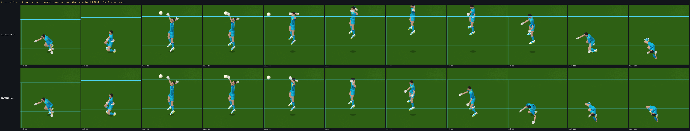
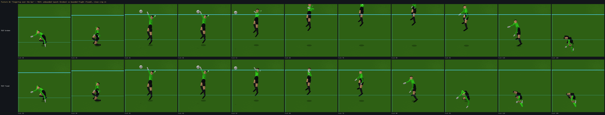

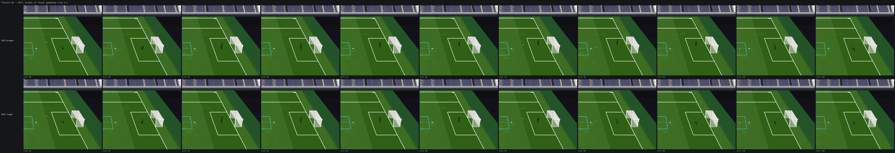
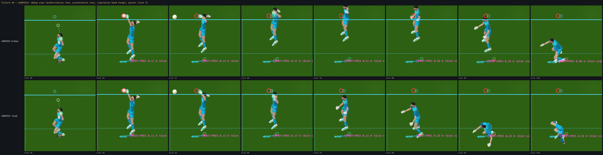
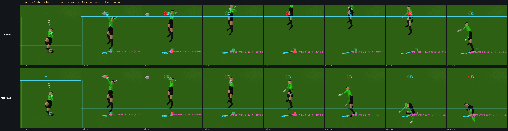
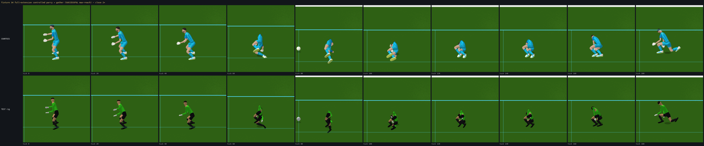
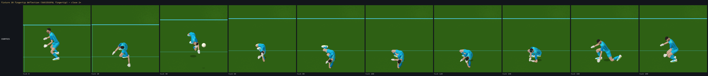
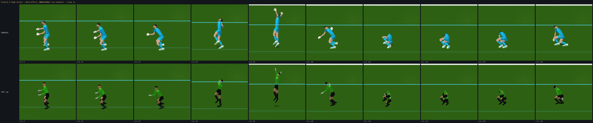
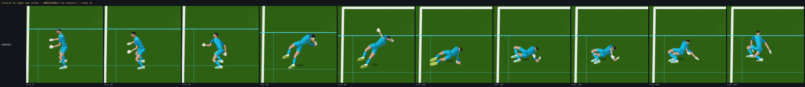
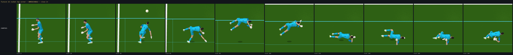
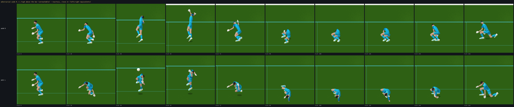
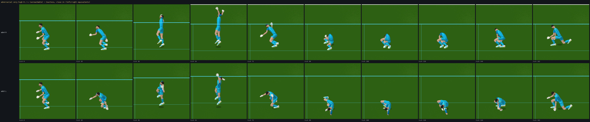
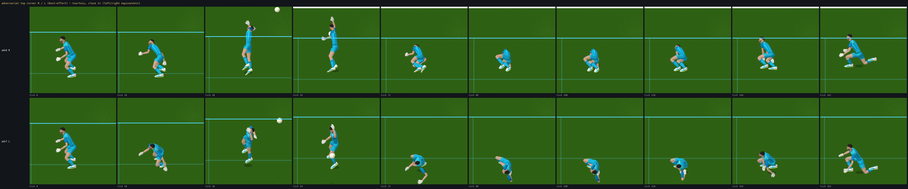
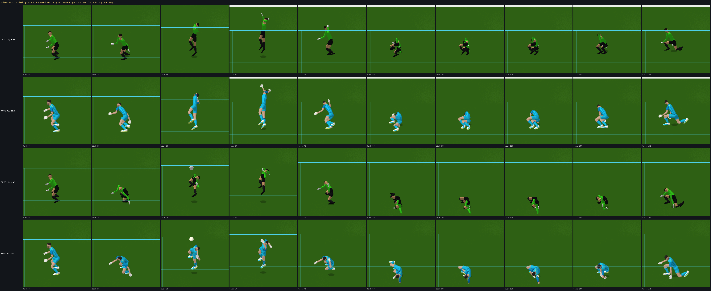
pelvis / head = max height of the presentation pelvis / head; deviation = |presentation root − authoritative root| max; torso = max torso-assist angle; elbow = min included elbow angle of the reach arm; the simulation outcome column is identical before and after by construction (presentation never feeds back); residual at contact = glove centre to the authoritative hand target at the contact tick; miss residual = the largest glove-to-target distance while the glove IK is fully on and no contact exists (kept, not optimised away); flips = elbow bend-normal jumps > 90° per tick.
| fixture | shared test rig (H 1.83) | true-height Courtois (H 2.014) | ||||||||||||||
|---|---|---|---|---|---|---|---|---|---|---|---|---|---|---|---|---|
| pelvis / head max [m] before→after | presentation-root deviation max [m] | torso assist max | elbow min before→after | simulation outcome (unchanged) | glove residual at contact [m] | miss residual max [m] | bend flips / NaN | pelvis / head max [m] before→after | presentation-root deviation max [m] | torso assist max | elbow min before→after | simulation outcome (unchanged) | glove residual at contact [m] | miss residual max [m] | bend flips / NaN | |
| 42 S4 K2 high tip-up (POWER 28 m/s under the ba | 1.52→1.52 / 2.17→2.17 | 1.47→1.47 | 9° | 36→36° | WEAK PARRY (through) | 0.064 | 1.85 | 0/ok | 1.50→1.50 / 2.16→2.16 | 1.21→1.21 | 7° | 34→34° | WEAK PARRY (through) | 0.015 | 1.98 | 0/ok |
| 49 M3 far dive LEFT TOP (synthK lat -1.6 z 2.0 | 0.88→0.88 / 1.57→1.57 | 0.15→0.15 | 20° | 40→40° | CATCH | 0.709 | 1.01 | 0/ok | 0.98→0.98 / 1.72→1.72 | 0.15→0.15 | 13° | 34→34° | CATCH | 0.587 | 1.04 | 0/ok |
| 50 M3 SW-facing far dive (from the south) | 0.85→0.85 / 1.51→1.51 | 0.36→0.36 | 0° | 57→57° | NO CONTACT | — | 1.34 | 0/ok | 0.95→0.95 / 1.65→1.65 | 0.38→0.38 | 0° | 57→57° | NO CONTACT | — | 1.39 | 0/ok |
| 12 future max-reach | 0.85→0.85 / 1.52→1.52 | 0.89→0.89 | 0° | 10→30° | NO CONTACT | — | 1.50 | 0/ok | 0.95→0.95 / 1.66→1.66 | 0.89→0.89 | 0° | 5→30° | NO CONTACT | — | 1.57 | 0/ok |
| 15 rocket top corner (unreachable) | 0.97→0.97 / 1.52→1.52 | 1.02→1.02 | 20° | 40→40° | NO CONTACT | — | 1.77 | 0/ok | 1.01→1.01 / 1.66→1.66 | 0.71→0.71 | 20° | 59→59° | NO CONTACT | — | 1.85 | 0/ok |
| 13 legal under-bar top corner | 1.06→1.06 / 1.52→1.52 | 1.34→1.34 | 17° | 26→30° | NO CONTACT | — | 1.91 | 0/ok | 1.08→1.08 / 1.66→1.66 | 1.02→1.02 | 17° | 12→30° | NO CONTACT | — | 2.00 | 0/ok |
| 14 medium-height far side | 1.25→1.25 / 1.65→1.65 | 2.01→2.01 | 12° | 31→31° | NO CONTACT | — | 2.15 | 0/ok | 1.24→1.24 / 1.66→1.66 | 1.69→1.69 | 12° | 29→30° | NO CONTACT | — | 2.27 | 0/ok |
| 2 high corner | 1.51→1.51 / 2.08→2.08 | 1.82→1.82 | 9° | 18→30° | NO CONTACT (best-effort) | — | 1.88 | 0/ok | 1.49→1.49 / 2.07→2.07 | 1.54→1.54 | 8° | 10→30° | NO CONTACT (best-effort) | — | 2.11 | 0/ok |
| 36 S4 fingertip over the bar (synthetic lat 1.4 | 2.84→1.62 / 3.43→2.23 | 2.50→1.76 | 8° | 41→83° | CONTROLLED PARRY | 0.011 | 1.45 | 0/ok | 2.15→1.63 / 2.79→2.27 | 1.88→1.46 | 5° | 63→81° | CONTROLLED PARRY | 0.004 | 1.45 | 0/ok |
| 40 S4 unreachable rocket stays untouched | 0.97→0.97 / 1.52→1.52 | 1.02→1.02 | 20° | 40→40° | NO CONTACT | — | 1.77 | 0/ok | 1.01→1.01 / 1.66→1.66 | 0.71→0.71 | 20° | 59→59° | NO CONTACT | — | 1.85 | 0/ok |
| 34 S4 full-extension controlled parry (norm ~0. | 0.85→0.85 / 1.52→1.52 | 0.36→0.36 | 20° | 28→30° | GATHER | 0.079 | 1.19 | 0/ok | 0.95→0.95 / 1.66→1.66 | 0.38→0.38 | 20° | 27→30° | GATHER | 0.093 | 1.23 | 0/ok |
| 39 S4 fingertip deflection into the net (synthe | 0.98→0.98 / 1.44→1.44 | 0.78→0.78 | 15° | 12→30° | CONTROLLED PARRY | 0.106 | 1.55 | 0/ok | 1.04→1.04 / 1.54→1.54 | 0.48→0.48 | 14° | 17→30° | CONTROLLED PARRY | 0.085 | 1.62 | 0/ok |
| 35 S4 fingertip around the post (LACES 15 m/s) | 0.85→0.85 / 1.52→1.52 | 1.20→1.20 | 1° | 10→30° | CONTROLLED PARRY | 0.054 | 1.43 | 0/ok | 0.95→0.95 / 1.66→1.66 | 1.20→1.20 | 0° | 8→30° | CONTROLLED PARRY | 0.064 | 1.50 | 0/ok |
| adhoc0 ADV central: wide R high above bar (lat +2.6 | 1.41→1.41 / 1.84→1.84 | 0.95→0.95 | 12° | 12→30° | NO CONTACT (best-effort) | — | 2.15 | 0/ok | 1.41→1.41 / 1.84→1.84 | 0.62→0.62 | 12° | 11→30° | NO CONTACT (best-effort) | — | 2.38 | 0/ok |
| adhoc1 ADV central: wide L high above bar (lat -2.6 | 1.41→1.41 / 1.84→1.84 | 0.95→0.95 | 12° | 12→30° | NO CONTACT (best-effort) | — | 2.15 | 0/ok | 1.41→1.41 / 1.84→1.84 | 0.62→0.62 | 12° | 11→30° | NO CONTACT (best-effort) | — | 2.38 | 0/ok |
| adhoc2 ADV central: very wide R mid (lat +3.2 z 1.2 | 1.21→1.21 / 1.27→1.27 | 0.83→0.83 | 15° | 9→30° | NO CONTACT (best-effort) | — | 1.56 | 0/ok | 1.30→1.30 / 1.45→1.45 | 0.49→0.49 | 15° | 14→30° | NO CONTACT (best-effort) | — | 1.65 | 0/ok |
| adhoc3 ADV central: very wide L mid (lat -3.2 z 1.2 | 1.21→1.21 / 1.27→1.27 | 0.83→0.83 | 15° | 9→30° | NO CONTACT (best-effort) | — | 1.56 | 0/ok | 1.30→1.30 / 1.45→1.45 | 0.49→0.49 | 15° | 14→30° | NO CONTACT (best-effort) | — | 1.65 | 0/ok |
| adhoc4 ADV central: very high R (lat +2.0 z 3.0 v 1 | 1.49→1.49 / 2.05→2.05 | 0.76→0.76 | 13° | 12→30° | NO CONTACT (best-effort) | — | 2.21 | 0/ok | 1.46→1.46 / 2.05→2.05 | 0.48→0.48 | 12° | 15→30° | NO CONTACT (best-effort) | — | 2.46 | 0/ok |
| adhoc5 ADV central: very high L (lat -2.0 z 3.0 v 1 | 1.49→1.49 / 2.05→2.05 | 0.76→0.76 | 13° | 12→30° | NO CONTACT (best-effort) | — | 2.21 | 0/ok | 1.46→1.46 / 2.05→2.05 | 0.48→0.48 | 12° | 15→30° | NO CONTACT (best-effort) | — | 2.46 | 0/ok |
| adhoc6 ADV central: top corner R reachable-ish (lat | 1.34→1.34 / 1.90→1.90 | 1.35→1.35 | 8° | 22→30° | NO CONTACT (best-effort) | — | 2.03 | 0/ok | 1.29→1.29 / 1.86→1.86 | 0.89→0.89 | 8° | 10→30° | NO CONTACT (best-effort) | — | 2.34 | 0/ok |
| adhoc7 ADV central: top corner L reachable-ish (lat | 1.34→1.34 / 1.90→1.90 | 1.35→1.35 | 8° | 22→30° | NO CONTACT (best-effort) | — | 2.03 | 0/ok | 1.29→1.29 / 1.86→1.86 | 0.89→0.89 | 8° | 10→30° | NO CONTACT (best-effort) | — | 2.34 | 0/ok |
| adhoc8 ADV SW-facing: wide R high (lat +2.6 z 2.6 v | 1.71→1.71 / 2.00→2.00 | 0.71→0.71 | 17° | 44→44° | NO CONTACT (best-effort) | — | 2.24 | 0/ok | 1.73→1.73 / 2.01→2.01 | 0.44→0.44 | 18° | 41→41° | NO CONTACT (best-effort) | — | 2.37 | 0/ok |
| adhoc9 ADV SW-facing: wide L high (lat -2.6 z 2.6 v | 1.36→1.36 / 1.81→1.81 | 1.07→1.07 | 18° | 42→42° | NO CONTACT (best-effort) | — | 2.15 | 0/ok | 1.36→1.36 / 1.80→1.80 | 0.73→0.73 | 18° | 29→30° | NO CONTACT (best-effort) | — | 2.35 | 0/ok |
| adhoc10 ADV NW-facing: wide R high (lat +2.6 z 2.6 v | 1.36→1.36 / 1.81→1.81 | 1.07→1.07 | 18° | 42→42° | NO CONTACT (best-effort) | — | 2.15 | 0/ok | 1.36→1.36 / 1.80→1.80 | 0.73→0.73 | 18° | 29→30° | NO CONTACT (best-effort) | — | 2.35 | 0/ok |
| adhoc11 ADV NW-facing: wide L high (lat -2.6 z 2.6 v | 1.71→1.71 / 2.00→2.00 | 0.71→0.71 | 17° | 44→44° | NO CONTACT (best-effort) | — | 2.24 | 0/ok | 1.73→1.73 / 2.01→2.01 | 0.44→0.44 | 18° | 41→41° | NO CONTACT (best-effort) | — | 2.37 | 0/ok |
| adhoc12 ADV central: extreme wide+high R (lat +3.5 z | 1.60→1.60 / 2.03→2.03 | 0.71→0.71 | 14° | 12→30° | NO CONTACT (best-effort) | — | 2.25 | 0/ok | 1.61→1.61 / 2.04→2.04 | 0.45→0.45 | 13° | 12→30° | NO CONTACT (best-effort) | — | 2.45 | 0/ok |
| adhoc13 ADV central: extreme wide+high L (lat -3.5 z | 1.60→1.60 / 2.03→2.03 | 0.71→0.71 | 14° | 12→30° | NO CONTACT (best-effort) | — | 2.25 | 0/ok | 1.61→1.61 / 2.04→2.04 | 0.45→0.45 | 13° | 12→30° | NO CONTACT (best-effort) | — | 2.45 | 0/ok |
| 80 fixtures × 300 ticks | shared test rig | Courtois |
|---|---|---|
| bad continuity assertions | 0 | 0 |
| NaN frames | 0 | 0 |
| max presentation-root deviation from the authoritative root [m] | 1.473 (fixture 42) | 1.208 (fixture 42) |
| max torso-assist magnitude [deg] | 20.000 (fixture 53) | 20.000 (fixture 32) |
| min elbow included angle [deg] (all arm chains) | 27.437 (fixture 27) | 18.918 (fixture 67) |
| max pelvis height [m] | 1.630 (fixture 40) | 1.682 (fixture 40) |
| max head height [m] | 2.201 (fixture 6) | 2.270 (fixture 6) |
| glove residual at contact — n / max / mean [m] | 50 | 50 |
| max / mean | 0.709 / 0.246 | 0.587 / 0.252 |
| miss residual max [m] (no authoritative contact, glove IK fully on) | 0.363 (fixture 9) | 0.400 (fixture 9) |
| sole clearance min while planted [m] | — (test mesh: no measured sole) | -0.003 (fixture 52) |
| sole clearance min, any foot [m] | — (test mesh: no measured sole) | -0.016 (fixture 11) |
| FK elbow joint-limit interventions (ticks) | 0 | 0 |
| hand / ball flags (hand-over transients) | 0 | 16 |
| two-hand cradle flags (43 / 44 / 49, pre-existing) | 72 | 69 |
Simulation neutrality at full double precision (per tick: ball position + velocity + held + ctrl, keeper root + velocity + facing, commit, contact tick / volume / outcome / point, every RELEASE / DROP / KICK, camera): sprite ≡ animation OFF ≡ 3D test rig ≡ 3D Courtois on all 80 fixtures × 260 ticks and the 12 distribution fixtures × 300 ticks.
| scenario | SPRITE | OFF | SKELETAL_3D | SKELETAL_3D | commit tick | contact tick | identical | |
|---|---|---|---|---|---|---|---|---|
| 0 central ground | e9bb6e1333031745 | e9bb6e1333031745 | e9bb6e1333031745 | e9bb6e1333031745 | 52/52/52/52 | 89/89/89/89 | yes | |
| 1 low corner | 267f344a68024016 | 267f344a68024016 | 267f344a68024016 | 267f344a68024016 | 49/49/49/49 | None/None/None/None | yes | |
| 2 high corner | b16be16e5f0a4f43 | b16be16e5f0a4f43 | b16be16e5f0a4f43 | b16be16e5f0a4f43 | 43/43/43/43 | None/None/None/None | yes | |
| 3 near post | d98858a7b4758eb7 | d98858a7b4758eb7 | d98858a7b4758eb7 | d98858a7b4758eb7 | 49/49/49/49 | None/None/None/None | yes | |
| 4 far post | 052b55a79f019196 | 052b55a79f019196 | 052b55a79f019196 | 052b55a79f019196 | 49/49/49/49 | None/None/None/None | yes | |
| 5 close POWER | 6e5fec1f4865cc03 | 6e5fec1f4865cc03 | 6e5fec1f4865cc03 | 6e5fec1f4865cc03 | 43/43/43/43 | 31/31/31/31 | yes | |
| 6 long POWER | 910c00686e052963 | 910c00686e052963 | 910c00686e052963 | 910c00686e052963 | 43/43/43/43 | None/None/None/None | yes | |
| 7 curved INSIDE_R | 2770cd851b8f3592 | 2770cd851b8f3592 | 2770cd851b8f3592 | 2770cd851b8f3592 | 64/64/64/64 | 100/100/100/100 | yes | |
| 8 CHIP | 07f1232f7edf2cff | 07f1232f7edf2cff | 07f1232f7edf2cff | 07f1232f7edf2cff | 66/66/66/66 | 86/86/86/86 | yes | |
| 9 keeper set (centre) | 8ba110e852ee4133 | 8ba110e852ee4133 | 8ba110e852ee4133 | 8ba110e852ee4133 | 52/52/52/52 | 86/86/86/86 | yes | |
| 10 keeper mispositioned | cd2a74a0c0fd95ee | cd2a74a0c0fd95ee | cd2a74a0c0fd95ee | cd2a74a0c0fd95ee | 60/60/60/60 | 87/87/87/87 | yes | |
| 11 keeper already moving | fe5843e6bcd3b70d | fe5843e6bcd3b70d | fe5843e6bcd3b70d | fe5843e6bcd3b70d | 62/62/62/62 | 86/86/86/86 | yes | |
| 12 future max-reach | 2aedc1e9edff8a15 | 2aedc1e9edff8a15 | 2aedc1e9edff8a15 | 2aedc1e9edff8a15 | 49/49/49/49 | None/None/None/None | yes | |
| 13 legal under-bar top corner | f9f9a7bf4c158ef4 | f9f9a7bf4c158ef4 | f9f9a7bf4c158ef4 | f9f9a7bf4c158ef4 | 43/43/43/43 | None/None/None/None | yes | |
| 14 medium-height far side | 6c25710efedf0215 | 6c25710efedf0215 | 6c25710efedf0215 | 6c25710efedf0215 | 43/43/43/43 | None/None/None/None | yes | |
| 15 rocket top corner (unreachable) | fb19f52edf25d74e | fb19f52edf25d74e | fb19f52edf25d74e | fb19f52edf25d74e | 43/43/43/43 | None/None/None/None | yes | |
| 16 at left foot (low) | f1ad07c627720244 | f1ad07c627720244 | f1ad07c627720244 | f1ad07c627720244 | 49/49/49/49 | 71/71/71/71 | yes | |
| 17 at right foot (low) | ad7bafa19a0f91f6 | ad7bafa19a0f91f6 | ad7bafa19a0f91f6 | ad7bafa19a0f91f6 | 49/49/49/49 | 71/71/71/71 | yes | |
| 18 between legs (low) | 26759912950271e6 | 26759912950271e6 | 26759912950271e6 | 26759912950271e6 | 49/49/49/49 | 71/71/71/71 | yes | |
| 19 20cm outside L foot | c901b8b272cdeec3 | c901b8b272cdeec3 | c901b8b272cdeec3 | c901b8b272cdeec3 | 49/49/49/49 | 71/71/71/71 | yes | |
| 20 20cm outside R foot | ae9e40359b522bae | ae9e40359b522bae | ae9e40359b522bae | ae9e40359b522bae | 49/49/49/49 | 71/71/71/71 | yes | |
| 21 ankle-height low corner | b5979a6f3e188482 | b5979a6f3e188482 | b5979a6f3e188482 | b5979a6f3e188482 | 49/49/49/49 | None/None/None/None | yes | |
| 22 close POWER at feet | c94c952fb9c4d725 | c94c952fb9c4d725 | c94c952fb9c4d725 | c94c952fb9c4d725 | 43/43/43/43 | 34/34/34/34 | yes | |
| 23 low INSIDE_R at foot | 72d7ec55a5321d93 | 72d7ec55a5321d93 | 72d7ec55a5321d93 | 72d7ec55a5321d93 | 73/73/73/73 | 94/94/94/94 | yes | |
| 24 just beyond foot (hand) | 18f5f00b16c73a72 | 18f5f00b16c73a72 | 18f5f00b16c73a72 | 18f5f00b16c73a72 | 49/49/49/49 | 74/74/74/74 | yes | |
| 25 beyond both -> goal | e6d396ce8c889019 | e6d396ce8c889019 | e6d396ce8c889019 | e6d396ce8c889019 | 49/49/49/49 | None/None/None/None | yes | |
| 26 S4 easy central catch (CHIP lob into the hands) | 45cd14d860908eda | 45cd14d860908eda | 45cd14d860908eda | 45cd14d860908eda | 61/61/61/61 | 87/87/87/87 | yes | |
| 27 S4 chest gather (CHIP, hands+chest) | a7c451de29f50f31 | a7c451de29f50f31 | a7c451de29f50f31 | a7c451de29f50f31 | 79/79/79/79 | 105/105/105/105 | yes | |
| 28 S4 central hard shot parry (LACES 24 m/s) | ca3699f2d998fb44 | ca3699f2d998fb44 | ca3699f2d998fb44 | ca3699f2d998fb44 | 53/53/53/53 | 64/64/64/64 | yes | |
| 29 S4 low foot save (20 cm outside R foot) | ae9e40359b522bae | ae9e40359b522bae | ae9e40359b522bae | ae9e40359b522bae | 49/49/49/49 | 71/71/71/71 | yes | |
| 30 S4 shin block (synthetic lat 0.4 z 0.4 18 m/s) | 53312254d9a3cc3d | 53312254d9a3cc3d | 53312254d9a3cc3d | 53312254d9a3cc3d | 32/32/32/32 | 44/44/44/44 | yes | |
| 31 S4 body block (POWER 26 m/s at the chest) | 03d5779b0b038942 | 03d5779b0b038942 | 03d5779b0b038942 | 03d5779b0b038942 | 43/43/43/43 | 50/50/50/50 | yes | |
| 32 S4 comfortable lateral hand save (LACES 19 m/s) | 49f18efa7a4732c9 | 49f18efa7a4732c9 | 49f18efa7a4732c9 | 49f18efa7a4732c9 | 49/49/49/49 | 75/75/75/75 | yes | |
| 33 S4 lateral catch (synthetic lat 1.2 z 1.3 13 m/s) | 108891c318a0793b | 108891c318a0793b | 108891c318a0793b | 108891c318a0793b | 55/55/55/55 | 62/62/62/62 | yes | |
| 34 S4 full-extension controlled parry (norm ~0.96) | e3c9646418e225b9 | e3c9646418e225b9 | e3c9646418e225b9 | e3c9646418e225b9 | 49/49/49/49 | None/None/None/None | yes | |
| 35 S4 fingertip around the post (LACES 15 m/s) | a510cfde663012f1 | a510cfde663012f1 | a510cfde663012f1 | a510cfde663012f1 | 49/49/49/49 | None/None/None/None | yes | |
| 36 S4 fingertip over the bar (synthetic lat 1.4 z 2.45 17 m/s) | 59d318e6324cff24 | 59d318e6324cff24 | 59d318e6324cff24 | 59d318e6324cff24 | 15/15/15/15 | 47/47/47/47 | yes | |
| 37 S4 awkward spill — weak parry (POWER 27 m/s) | eb457f7b78d40687 | eb457f7b78d40687 | eb457f7b78d40687 | eb457f7b78d40687 | 43/43/43/43 | 54/54/54/54 | yes | |
| 38 S4 awkward spill — body block into the D | c85c631b746bcd2f | c85c631b746bcd2f | c85c631b746bcd2f | c85c631b746bcd2f | 61/61/61/61 | 69/69/69/69 | yes | |
| 39 S4 fingertip deflection into the net (synthetic lat 2.02 z 1.2 21 m/s) | 722ef07daee4c250 | 722ef07daee4c250 | 722ef07daee4c250 | 722ef07daee4c250 | 15/15/15/15 | None/None/None/None | yes | |
| 40 S4 unreachable rocket stays untouched | fb19f52edf25d74e | fb19f52edf25d74e | fb19f52edf25d74e | fb19f52edf25d74e | 43/43/43/43 | None/None/None/None | yes | |
| 41 S4 handling probe (synthetic lat 1.0 z 1.2 21 m/s — T cycles handling) | 0f0c6beada57c911 | 0f0c6beada57c911 | 0f0c6beada57c911 | 0f0c6beada57c911 | 27/27/27/27 | 37/37/37/37 | yes | |
| 42 S4 K2 high tip-up (POWER 28 m/s under the bar) | 45a095f25c187f52 | 45a095f25c187f52 | 45a095f25c187f52 | 45a095f25c187f52 | 38/38/38/38 | 62/62/62/62 | yes | |
| 43 M3 low dive LEFT, hand (synthK lat -1.4 z 0.35 15 m/s) | 1b3a97458453224e | 1b3a97458453224e | 1b3a97458453224e | 1b3a97458453224e | 13/13/13/13 | 53/53/53/53 | yes | |
| 44 M3 low dive RIGHT, hand (synthK lat 1.4 z 0.35 15 m/s) | 5ab92da135a65ebb | 5ab92da135a65ebb | 5ab92da135a65ebb | 5ab92da135a65ebb | 13/13/13/13 | 53/53/53/53 | yes | |
| 45 M3 chest catch (synthK lat 0.05 z 1.15 15 m/s) | 98bbf7b3c8a70bd6 | 98bbf7b3c8a70bd6 | 98bbf7b3c8a70bd6 | 98bbf7b3c8a70bd6 | 45/45/45/45 | 53/53/53/53 | yes | |
| 46 M3 high ball, real chip (CHIP 0.55) | bf2b7c59abd1d089 | bf2b7c59abd1d089 | bf2b7c59abd1d089 | bf2b7c59abd1d089 | 84/84/84/84 | 91/91/91/91 | yes | |
| 47 M3 near-body LEFT (synthK lat -0.9 z 1.3 17 m/s) | 184bdf4fff7f1dd1 | 184bdf4fff7f1dd1 | 184bdf4fff7f1dd1 | 184bdf4fff7f1dd1 | 40/40/40/40 | 46/46/46/46 | yes | |
| 48 M3 foot save RIGHT wide (synthK lat 0.55 z 0.05 14 m/s) | 1a1c5dccde346982 | 1a1c5dccde346982 | 1a1c5dccde346982 | 1a1c5dccde346982 | 26/26/26/26 | 57/57/57/57 | yes | |
| 49 M3 far dive LEFT TOP (synthK lat -1.6 z 2.0 18 m/s) | 7f05dc258d087466 | 7f05dc258d087466 | 7f05dc258d087466 | 7f05dc258d087466 | 34/34/34/34 | 44/44/44/44 | yes | |
| 50 M3 SW-facing far dive (from the south) | ed5f0d9b14938389 | ed5f0d9b14938389 | ed5f0d9b14938389 | ed5f0d9b14938389 | 22/22/22/22 | None/None/None/None | yes | |
| 51 M3 NW-facing low dive (from the north) | afae22d175c78cc8 | afae22d175c78cc8 | afae22d175c78cc8 | afae22d175c78cc8 | 22/22/22/22 | None/None/None/None | yes | |
| 52 M3 S-facing tight angle, high across | 9476d50a3a3a3ccf | 9476d50a3a3a3ccf | 9476d50a3a3a3ccf | 9476d50a3a3a3ccf | 22/22/22/22 | 32/32/32/32 | yes | |
| 53 M3 N-facing tight angle, low across | 206a028c7c7c40d2 | 206a028c7c7c40d2 | 206a028c7c7c40d2 | 206a028c7c7c40d2 | 22/22/22/22 | 35/35/35/35 | yes | |
| 54 M3 moving keeper into a chest catch (gkv 0,-3) | 3814d680e53d2b07 | 3814d680e53d2b07 | 3814d680e53d2b07 | 3814d680e53d2b07 | 60/60/60/60 | 67/67/67/67 | yes | |
| 55 M3b foot save RIGHT wide (aim 33.2, lat +0.59) | 4083571a340b097a | 4083571a340b097a | 4083571a340b097a | 4083571a340b097a | 46/46/46/46 | 70/70/70/70 | yes | |
| 56 M3b foot save LEFT wide (aim 34.78, lat -0.58) | 6164ed0dff280bd9 | 6164ed0dff280bd9 | 6164ed0dff280bd9 | 6164ed0dff280bd9 | 46/46/46/46 | 70/70/70/70 | yes | |
| 57 M3b SW-facing foot save RIGHT (from the south, aim 34.2) | 7cfb90f887e94c16 | 7cfb90f887e94c16 | 7cfb90f887e94c16 | 7cfb90f887e94c16 | 22/22/22/22 | 33/33/33/33 | yes | |
| 58 M3b NW-facing foot save LEFT (from the north, aim 33.8) | d9a0828f34465381 | d9a0828f34465381 | d9a0828f34465381 | d9a0828f34465381 | 22/22/22/22 | 33/33/33/33 | yes | |
| 59 M3b SSW-facing foot save RIGHT (from [96,40], aim 33.9) | 4e715d876dac9370 | 4e715d876dac9370 | 4e715d876dac9370 | 4e715d876dac9370 | 22/22/22/22 | 38/38/38/38 | yes | |
| 60 M3b NNW-facing foot save LEFT (from [96,28], aim 34.1) | b7ae26ed03b070f4 | b7ae26ed03b070f4 | b7ae26ed03b070f4 | b7ae26ed03b070f4 | 22/22/22/22 | 38/38/38/38 | yes | |
| 61 M3c SW-facing chest catch (from the south, synthK z 1.15) | b7e0d38e70986bf0 | b7e0d38e70986bf0 | b7e0d38e70986bf0 | b7e0d38e70986bf0 | 11/11/11/11 | 20/20/20/20 | yes | |
| 62 M3c NW-facing chest catch (from the north, synthK z 1.2) | 26e072db8d360d3b | 26e072db8d360d3b | 26e072db8d360d3b | 26e072db8d360d3b | 11/11/11/11 | 20/20/20/20 | yes | |
| 63 M3c SSW-facing chest catch (from [96,40], synthK z 1.1) | 51bc2d95d7adb36c | 51bc2d95d7adb36c | 51bc2d95d7adb36c | 51bc2d95d7adb36c | 19/19/19/19 | 26/26/26/26 | yes | |
| 64 D1 PUT DOWN central (chest catch → place ahead → free ball) | e316b59b78d9d247 | e316b59b78d9d247 | e316b59b78d9d247 | e316b59b78d9d247 | 45/45/45/45 | 53/53/53/53 | yes | |
| 65 D2 HAND ROLL RIGHT (target [96, 26], right hand) | 02667804f3d4a774 | 02667804f3d4a774 | 02667804f3d4a774 | 02667804f3d4a774 | 45/45/45/45 | 53/53/53/53 | yes | |
| 66 D2 HAND ROLL LEFT (target [96, 42], left hand) | 32954c31372927cf | 32954c31372927cf | 32954c31372927cf | 32954c31372927cf | 45/45/45/45 | 53/53/53/53 | yes | |
| 67 D3 OVERARM THROW RIGHT (target [78, 24]) | 9c0f8ab21b0375e8 | 9c0f8ab21b0375e8 | 9c0f8ab21b0375e8 | 9c0f8ab21b0375e8 | 45/45/45/45 | 53/53/53/53 | yes | |
| 68 D3 OVERARM THROW LEFT (target [78, 44]) | caa54c51f12dda7f | caa54c51f12dda7f | caa54c51f12dda7f | caa54c51f12dda7f | 45/45/45/45 | 53/53/53/53 | yes | |
| 69 D3 OVERARM THROW far, straight (target [62, 34]) | 29aca0e9f40cf791 | 29aca0e9f40cf791 | 29aca0e9f40cf791 | 29aca0e9f40cf791 | 45/45/45/45 | 53/53/53/53 | yes | |
| 70 D4 PUNT RIGHT foot (target [55, 34]) | 50b011daf7908024 | 50b011daf7908024 | 50b011daf7908024 | 50b011daf7908024 | 45/45/45/45 | 53/53/53/53 | yes | |
| 71 D4 PUNT LEFT foot (target [55, 34]) | 198ee0343732822e | 198ee0343732822e | 198ee0343732822e | 198ee0343732822e | 45/45/45/45 | 53/53/53/53 | yes | |
| 72 D5 angled: SW-facing catch → PUT DOWN (body must turn to face out) | 54a917bbe48edbb5 | 54a917bbe48edbb5 | 54a917bbe48edbb5 | 54a917bbe48edbb5 | 11/11/11/11 | 20/20/20/20 | yes | |
| 73 D5 angled: NW-facing catch → THROW to the far side (target [80, 46]) | 09ca2aa1060b20d8 | 09ca2aa1060b20d8 | 09ca2aa1060b20d8 | 09ca2aa1060b20d8 | 11/11/11/11 | 20/20/20/20 | yes | |
| 74 D5 angled: SSW-facing catch → ROLL across (target [98, 42]) | 50a798ee6ce48d74 | 50a798ee6ce48d74 | 50a798ee6ce48d74 | 50a798ee6ce48d74 | 19/19/19/19 | 26/26/26/26 | yes | |
| 75 D5 angled: SW-facing catch → PUNT left foot (target [50, 30]) | 82c6b249ffcd5acd | 82c6b249ffcd5acd | 82c6b249ffcd5acd | 82c6b249ffcd5acd | 11/11/11/11 | 20/20/20/20 | yes | |
| 76 D6 front view: PUNT right foot toward the camera (target [96, 60]) | dde6c3372e33244e | dde6c3372e33244e | dde6c3372e33244e | dde6c3372e33244e | 45/45/45/45 | 53/53/53/53 | yes | |
| 77 D6 front view: THROW toward the camera (target [92, 58]) | b1188fdd4a362342 | b1188fdd4a362342 | b1188fdd4a362342 | b1188fdd4a362342 | 45/45/45/45 | 53/53/53/53 | yes | |
| 78 D6 front view: ROLL toward the camera (target [99, 50]) | 680eda8e6c5fe446 | 680eda8e6c5fe446 | 680eda8e6c5fe446 | 680eda8e6c5fe446 | 45/45/45/45 | 53/53/53/53 | yes | |
| 79 D6 front view: PUT DOWN facing the camera (target [101, 60]) | 1e109cbe5037f2f4 | 1e109cbe5037f2f4 | 1e109cbe5037f2f4 | 1e109cbe5037f2f4 | 45/45/45/45 | 53/53/53/53 | yes | |
| ALL IDENTICAL: YES | ||||||||
| SPRITE perf {'n': 20800, 'avgMs': 0.01315384593147498, 'maxMs': 124.59999990463257, 'draws': None, 'target': None} errors [] | ||||||||
| OFF perf {'n': 0, 'avgMs': 0, 'maxMs': 0, 'draws': None, 'target': None} errors [] | ||||||||
| SKELETAL_3D perf {'n': 20800, 'avgMs': 0.9821394230654606, 'maxMs': 40.5, 'draws': 2, 'target': '550x450 (1/2)'} errors [] | ||||||||
| SKELETAL_3D perf {'n': 20800, 'avgMs': 1.0619278847254239, 'maxMs': 208.29999995231628, 'draws': 2, 'target': '44x60 (1/undefined)'} errors [] | ||||||||
| scenario | SPRITE | OFF | SKELETAL_3D | SKELETAL_3D | commit tick | contact tick | identical | |
|---|---|---|---|---|---|---|---|---|
| 64 D1 PUT DOWN central (chest catch → place ahead → free ball) | e99a700c2effa9b8 | e99a700c2effa9b8 | e99a700c2effa9b8 | e99a700c2effa9b8 | 45/45/45/45 | 53/53/53/53 | yes | |
| 65 D2 HAND ROLL RIGHT (target [96, 26], right hand) | f491988b6ff04d49 | f491988b6ff04d49 | f491988b6ff04d49 | f491988b6ff04d49 | 45/45/45/45 | 53/53/53/53 | yes | |
| 66 D2 HAND ROLL LEFT (target [96, 42], left hand) | c2a8fb60ff8a7de1 | c2a8fb60ff8a7de1 | c2a8fb60ff8a7de1 | c2a8fb60ff8a7de1 | 45/45/45/45 | 53/53/53/53 | yes | |
| 67 D3 OVERARM THROW RIGHT (target [78, 24]) | 40e392b0af6cd7dc | 40e392b0af6cd7dc | 40e392b0af6cd7dc | 40e392b0af6cd7dc | 45/45/45/45 | 53/53/53/53 | yes | |
| 68 D3 OVERARM THROW LEFT (target [78, 44]) | 3a68e966e1bcd60f | 3a68e966e1bcd60f | 3a68e966e1bcd60f | 3a68e966e1bcd60f | 45/45/45/45 | 53/53/53/53 | yes | |
| 69 D3 OVERARM THROW far, straight (target [62, 34]) | ae73943371e7b6f7 | ae73943371e7b6f7 | ae73943371e7b6f7 | ae73943371e7b6f7 | 45/45/45/45 | 53/53/53/53 | yes | |
| 70 D4 PUNT RIGHT foot (target [55, 34]) | 070f71ed2f48bfc2 | 070f71ed2f48bfc2 | 070f71ed2f48bfc2 | 070f71ed2f48bfc2 | 45/45/45/45 | 53/53/53/53 | yes | |
| 71 D4 PUNT LEFT foot (target [55, 34]) | 78cc9f31e4d860a1 | 78cc9f31e4d860a1 | 78cc9f31e4d860a1 | 78cc9f31e4d860a1 | 45/45/45/45 | 53/53/53/53 | yes | |
| 72 D5 angled: SW-facing catch → PUT DOWN (body must turn to face out) | ad323bb86fca7b1d | ad323bb86fca7b1d | ad323bb86fca7b1d | ad323bb86fca7b1d | 15/15/15/15 | 21/21/21/21 | yes | |
| 73 D5 angled: NW-facing catch → THROW to the far side (target [80, 46]) | 3c03a7ebe749160a | 3c03a7ebe749160a | 3c03a7ebe749160a | 3c03a7ebe749160a | 15/15/15/15 | 21/21/21/21 | yes | |
| 74 D5 angled: SSW-facing catch → ROLL across (target [98, 42]) | 1b9f16c3f94c2e8b | 1b9f16c3f94c2e8b | 1b9f16c3f94c2e8b | 1b9f16c3f94c2e8b | 18/18/18/18 | 26/26/26/26 | yes | |
| 75 D5 angled: SW-facing catch → PUNT left foot (target [50, 30]) | ec3405a31b3690c4 | ec3405a31b3690c4 | ec3405a31b3690c4 | ec3405a31b3690c4 | 15/15/15/15 | 21/21/21/21 | yes | |
| ALL IDENTICAL: YES | ||||||||
| SPRITE perf {'n': 3600, 'avgMs': 0.008833333916134304, 'maxMs': 2.700000047683716, 'draws': None, 'target': None} errors [] | ||||||||
| OFF perf {'n': 0, 'avgMs': 0, 'maxMs': 0, 'draws': None, 'target': None} errors [] | ||||||||
| SKELETAL_3D perf {'n': 3600, 'avgMs': 0.6923333327637778, 'maxMs': 18.59999990463257, 'draws': 1, 'target': '550x450 (1/2)'} errors [] | ||||||||
| SKELETAL_3D perf {'n': 3600, 'avgMs': 1.2527222233348423, 'maxMs': 106.20000004768372, 'draws': 1, 'target': '36x59 (1/undefined)'} errors [] | ||||||||
| frozen TEST-character manifest (320 ticks) | vs v13.1 baseline |
|---|---|
| 42 S4 K2 high tip-up (POWER 28 m/s under th | IDENTICAL (every joint, every tick) |
| 45 M3 chest catch (synthK lat 0.05 z 1.15 1 | ball-radius fix only (cradle hands ≤ 0.007 m) |
| 55 M3b foot save RIGHT wide (aim 33.2, lat | IDENTICAL (every joint, every tick) |
| 56 M3b foot save LEFT wide (aim 34.78, lat | IDENTICAL (every joint, every tick) |
| 57 M3b SW-facing foot save RIGHT (from the | IDENTICAL (every joint, every tick) |
| 58 M3b NW-facing foot save LEFT (from the n | IDENTICAL (every joint, every tick) |
| 59 M3b SSW-facing foot save RIGHT (from [96 | IDENTICAL (every joint, every tick) |
| 60 M3b NNW-facing foot save LEFT (from [96, | IDENTICAL (every joint, every tick) |